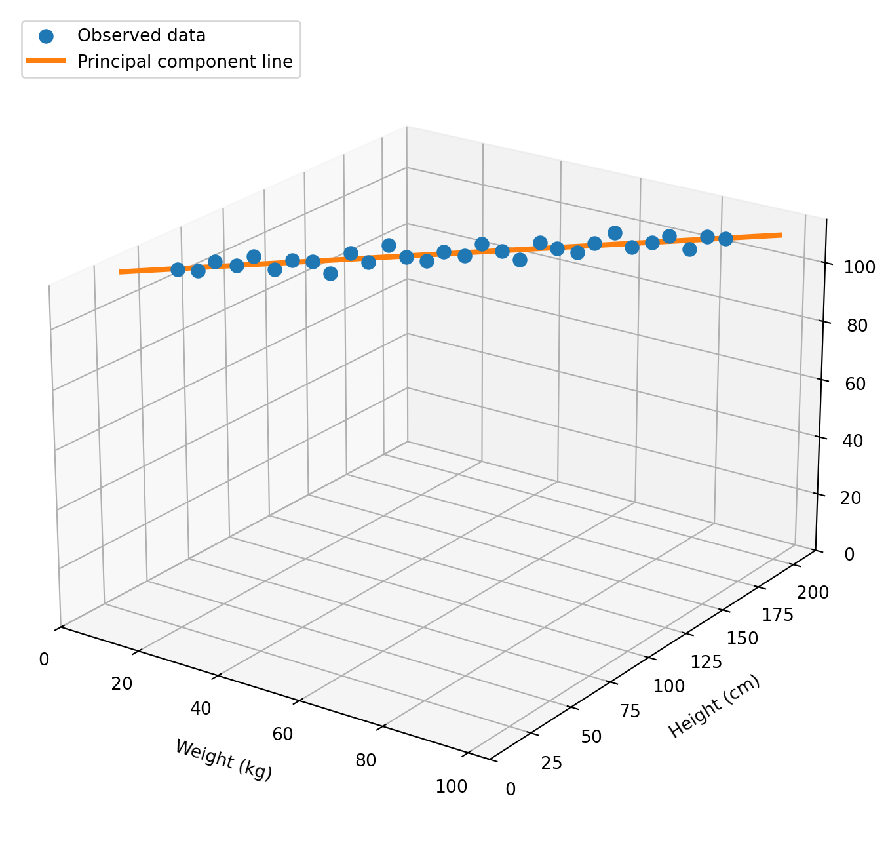
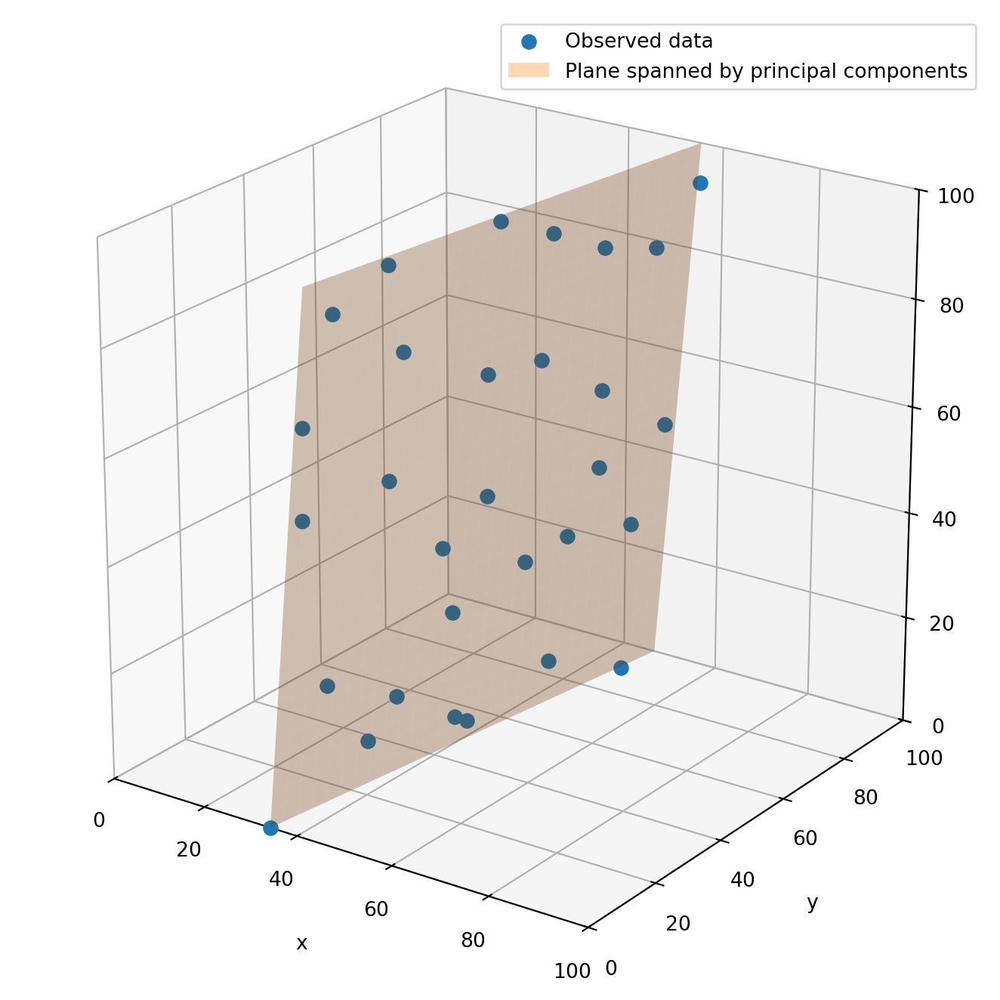

import numpy as np
np.set_printoptions(precision=3, floatmode="fixed", suppress=True)Lecture 3: Section 5.1
Solutions to the exercises
Make sure to import NumPy to be able to do all the exercises.
Question 1
Suppose that A \in \mathbb{R}^{m \times n} is matrix and b \in \mathbb{R}^{m} a vector. If m \geq n and the columns of A are linearly independent, i.e., if the column rank of A is n, then the unique least squares solution to \min_x ||Ax - b||_2. is given by x^* = (A^TA)^{-1}A^Tb. (The combination of m \geq n and A having linearly independent columns guarantees that (A^TA)^{-1} exists.)
Write a function that takes as input a matrix A and vector b. It should return the least squares solution x^* if A has full rank, and a message saying that A does not have full column rank if not. You may use an if/else-statement for this case distinction.
It should give the following output on the inputs below.
A = np.array([
[0.61776137, 0.9880466, 0.93526716],
[0.25839379, 0.66983101, 0.55140378],
[0.42598981, 0.47034738, 0.67713771],
[0.05808045, 0.60282648, 0.968094 ],
[0.6152295, 0.18224588, 0.23185116]])
b = np.array([
[0.68873052],
[0.01618962],
[0.67498566],
[0.73718501],
[0.0448842 ]])
print(least_squares(A,b))[[ 0.052]
[-0.769]
[ 1.329]]A = np.array([
[0.61776137, 0.9880466, 0.9880466],
[0.25839379, 0.66983101, 0.66983101],
[0.42598981, 0.47034738, 0.47034738],
[0.05808045, 0.60282648, 0.60282648],
[0.6152295, 0.60282648, 0.60282648]])
b = np.array([0.68873052,0.01618962, 0.67498566, 0.73718501, 0.0448842])
# Columns are not linearly independent
print(least_squares(A,b))Matrix A does not have full column rankdef least_squares(A,b):
m, n = np.shape(A)
rank_A = np.linalg.matrix_rank(A)
if rank_A == n:
return (np.linalg.inv(A.T @ A) @ A.T) @ b
else:
return "Matrix A does not have full column rank"Question 2
In this exercise we are going to implement Cramer’s rule for solving the system Ax = b when A \in \mathbb{R}^{n \times n} is an invertible matrix. Cramer’s rule determines the solution x = [x_0,\dots,x_{n-1}] by x_i = \frac{\text{det}(A_i)}{\text{det}(A)} \ \ \ \text{ for } i = 0,\dots,n-1, where A_i is the matrix A in which column i is replaced by b.
Write a function cramer(A,b) that computes the solution x according to Cramer’s rule (you may use one for-loop in your implementation).
Your function should give the following output on the given input.
A = np.array([
[0.61776137, 0.9880466, 0.93526716],
[0.25839379, 0.66983101, 0.55140378],
[0.42598981, 0.47034738, 0.67713771]
])
b = np.array([0.68873052, 0.01618962, 0.67498566])
# Solution with Cramer's rule
print(cramer(A,b))
# Solution with np.linalg.solve() for comparison
print(np.linalg.solve(A,b))[ 2.884 -0.970 -0.144]
[ 2.884 -0.970 -0.144]def cramer(A, b):
m, n = np.shape(A)
x = np.zeros(m)
# Compute determinant after replacing i-th column by `b`.
for i in range(m):
A_mod = A.copy()
A_mod[:, i] = b
x[i] = np.linalg.det(A_mod)
return x / np.linalg.det(A) Question 3
Assume we are given a matrix A \in \mathbb{R}^{m \times n} with the property that every subset of m columns of A is linearly independent. This is, e.g., typically the case if the entries in A were randomly generated (we will see this later in the course).
One way to obtain a solution to an underdetermined system (n > m) Ax = b is to pick a set of indices R \subseteq \{0,\dots,n-1\} of size |R| = m. Set x_i = 0 for all i \notin R (there are n - m such variables), and determine the values in x_R = (x_i)_{i \in R} by solving the system Bx_R = b, where B is the matrix containing the columns of A corresponding to the indices in R.
Write a function underdetermined(A,b,R) that takes as input arrays A,b and a set R (using a list) as above, and returns a solution x \in \mathbb{R}^n to Ax = b satisfying the above description.
Your function should give the following output on the given input.
A = np.array([
[0.83, 0.43, 0.16, 0.01, 0.86, 0.87, 0.36, 0.68],
[0.29, 0.81, 0.78, 0.97, 0.2, 0.28, 0.44, 0.07],
[0.18, 0.81, 0.91, 0.88, 0.54, 0.89, 0.53, 0.88]])
b = np.array([0.68873052, 0.01618962, 0.67498566])
R = [0,4,7]
# Determine solution
x = underdetermined(A,b,R)
print(x)
# Verify correctness
print(A @ x - b) # All numbers almost zero (e-16 is numerical inaccuracies)[-3.163 0.000 0.000 0.000 5.314 0.000 0.000 -1.847]
[0.000 0.000 0.000]def underdetermined(A,b,R):
m, n = np.shape(A)
x = np.zeros(n)
x[R] = np.linalg.solve(A[:,R],b)
return xQuestion 4
In this exercise, we will look into the basics of principal component analysis (PCA); we emphasize that this is not a complete explanation, but we hope it helps.
We are given an m \times n matrix A containing n \geq 2 data points that each have m features. That is, every column of A corresponds to a data point.
We will be working with the dataset below, in which we have n = 30 data points, each with m = 3 features: weight, height and IQ. In practice, datasets are typically much larger, but we keep the set small here to be able to visualize it.
# Rows: weight (kg), height (cm), IQ; columns: 30 data points
A = np.array([
[10.0, 12.8, 15.5, 18.3, 21.0, 23.8, 26.6, 29.3, 32.1, 34.8,
37.6, 40.3, 43.1, 45.9, 48.6, 51.4, 54.1, 56.9, 59.7, 62.4,
65.2, 67.9, 70.7, 73.4, 76.2, 79.0, 81.7, 84.5, 87.2, 90.0],
[50.0, 55.2, 59.1, 65.0, 68.8, 74.6, 78.5, 84.3, 88.0, 94.0,
97.8, 103.6, 107.5, 113.2, 117.0, 123.0, 126.8, 132.5, 136.4, 142.2,
146.0, 151.9, 155.7, 161.5, 165.4, 171.2, 175.0, 180.9, 185.1, 190.0],
[110.0, 109.0, 112.0, 110.0, 113.0, 108.0, 111.0, 110.0, 106.0, 112.0,
109.0, 114.0, 110.0, 108.0, 111.0, 109.0, 113.0, 110.0, 107.0, 112.0,
110.0, 108.0, 111.0, 114.0, 109.0, 110.0, 112.0, 107.0, 111.0, 110.0]
])Although every data point is three-dimensional, it turns out these points, roughly speaking, can be “summarized” in a lower dimension. Indeed, the line in the figure below describes the data quite well and is one-dimensional.

The rough idea is to establish a description of the so-called principal component line, which mathematically speaking is a one-dimensional affine subspace \begin{bmatrix} \bar{\mu}_1 \\ \bar{\mu}_2 \\ \bar{\mu}_3 \end{bmatrix} + \text{span}\{v_0\} where the \bar{\mu}_i’s will be the row averages of A and v_0 \in \mathbb{R}^3 is a vector we determine later. Every data point column A_i of A can be approximated on this line by \hat{A}_i = \begin{bmatrix} \bar{\mu}_0 \\ \bar{\mu}_1 \\ \bar{\mu}_2 \end{bmatrix} + v_0 \cdot Z_i for some Z_i \in \mathbb{R}. This Z_i is the one-dimensional representation of \hat{A}_i, which in turn is close to A_i.
More generally, it turns out that there are many datasets for which the m features can be summarized in a k-dimensional subspace \text{span}\{v_0,\dots,v_{k-1}\} \subset \mathbb{R}^m with k \ll m. Every data point is approximated by an affine linear combination of k lines, i.e., \hat{A}_i = \begin{bmatrix} \bar{\mu}_{0} \\ \vdots\\ \bar{\mu}_{m-1} \end{bmatrix} + V_k Z_i = \begin{bmatrix} \bar{\mu}_{0} \\ \vdots\\ \bar{\mu}_{m-1} \end{bmatrix} + \sum_{j=0}^{k-1} z_{ij} v_j with V_k = [v_0 \ \dots \ v_{k-1}] having the v_i’s as columns, and Z_i = [z_{i0} \dots z_{i(k-1)}]^T \in \mathbb{R}^k the k-dimensional column vector representation of \hat{A}_i.
This type of dimensionality reduction in data is often useful for advanced machine learning algorithms so that they can run more efficiently by using the lower-dimensional Z_i points instead of the original higher-dimensional A_i data points.
In the procedure that follows, we will show how this lower-dimensional subspace can be constructed, using eigenvalues and eigenvectors. For a given feature, the sample mean \bar{\mu}_i of row i in A is defined as the average of all the values in that row. By subtracting from all elements in a row the row mean, we obtain the matrix B = A - \bar{\mu} \mathbf{1}^T, where \mathbf{1}^T \in \mathbb{R}^n is an all-ones row vector (so that \bar{\mu} \mathbf{1}^T is indeed a matrix). Next, the (symmetric) m \times m covariance matrix S is defined by S = \frac{1}{n-1} BB^T
- Write a function
covariance()that takes as input the matrix A and outputs the matrix S.
Testing your function on the data points in the array A given above should yield the following results.
# Covariance matrix
S = covariance(A)
print('S = \n',S, '\n')S =
[[ 589.528 1032.059 -0.421]
[1032.059 1807.019 -0.712]
[ -0.421 -0.712 4.097]]
# Covariance matrix function
def covariance(A):
m, n = np.shape(A)
# Compute matrix S
B = A - np.mean(A, axis=1)[:,None]
S = 1/(n-1)*(B @ B.T)
return SThe covariance matrix contains for i = 0,\dots,m-1 on its main diagonal the sample variances S_{ii} = \frac{1}{n-1} \sum_{j=0}^{n-1} (A_{ij} - \bar{\mu}_i)^2 and on its off-diagonal elements the covariance of features i and j at position (i,j). The trace of S, the total variance in the data, is equal to the sum of the eigenvalues of the matrix S, because of the spectral decomposition (recall from your Linear Algebra course) S = \sum_{i=0}^{m-1} \lambda_i v_iv_i^T where \lambda_i are the eigenvalues of S and v_i the eigenvector corresponding to \lambda_i for i = 0,\dots,m-1, with the v_i forming an orthonormal basis.
- Write a function
ordered_components()that takes as input a symmetric matrix S and outputs a vector containing the eigenvalues in descending order (largest to smallest), and a matrix containing the corresponding eigenvectors ordered according to the order of the eigenvalues.
As an example, if we have three eigenvalues \{\lambda_0, \lambda_1, \lambda_2\} with \lambda_2 \geq \lambda_0 \geq \lambda_1, then the output should be [\lambda_2, \lambda_0, \lambda_1] and the matrix should be [v_2 \ v_0 \ v_1] where the v_i are the eigenvectors corresponding to eigenvalues \lambda_i.
Hint: The functionnp.argsort()from Chapter 4 might be useful here.
Testing your function on the computed S in part a) should give the following results.
# Ordered eigenvalues and eigenvectors
S_values, S_vectors = ordered_components(S)
print('Eigenvalues are \n', S_values, '\n')
print('Eigenvectors are \n', S_vectors, '\n')Eigenvalues are
[2396.487 4.096 0.059]
Eigenvectors are
[[ 0.496 -0.002 0.868]
[ 0.868 0.002 -0.496]
[-0.000 1.000 0.003]]
def ordered_components(S):
# Compute eigenvalues and eigenvectors
eig_values, eig_vectors = np.linalg.eig(S)
# Compute positions in ascending order of eigenvalues
order = np.argsort(eig_values)
# np.argsort() gives positions in the ordered array from smallest to largest.
# NumPy version 2.5 (2026) can also give positions in the ordered array from largest to smallest,
# which would avoid the reversing using [::-1] below,
# but this version might not yet be in your Python installation, nor is it installed on the university computers.
# Re-order eigenvalues from smallest to largest
values_small_to_large = eig_values[order]
# Flip to largest to smallest
values_large_to_small = values_small_to_large[::-1]
# Re-order eigenvectors
vectors_small_to_large = eig_vectors[:,order]
vectors_large_to_small = vectors_small_to_large[::-1]
return values_large_to_small, vectors_large_to_small The covariance matrix is a sum of rank-one matrices \lambda_i v_iv_i^T. Each eigenvector gives a principal direction, and its eigenvalue gives the variance along that direction. We will next try to understand which eigenvectors contributes most to the data, by looking at the impact of their eigenvalues.
- Write a function
contributions()that takes a one-dimensional array x = [x_0,\dots,x_{n-1}] as input and outputs the numbers y_i = \frac{\displaystyle \sum_{j=0}^{i} x_j}{\displaystyle \sum_{j=0}^{n-1} x_j} for i = 0,\dots,n-1, i.e., y_i is the fraction that the first i+1 numbers contribute to the sum of all numbers in x.
Applying the function to the output of part b) should give the following.
# Contributions of the k largest eigenvalues
k_largest = contributions(S_values)
print('Contribution of the k largest eigenvalues \n', k_largest)Contribution of the k largest eigenvalues
[0.998 1.000 1.000]def contributions(x):
y = np.cumsum(x)/np.sum(x)
return y
NoteFurther explanation
From the outputs above, we can see that the largest eigenvalue \lambda_0 is much larger than the others, and accounts for almost all of the total variance (sum of the eigenvalues), i.e., \lambda_0/(\lambda_0 + \lambda_1 + \lambda_2) \approx 1.
This means that S=\lambda_0v_0v_0^T+\lambda_1v_1v_1^T+\lambda_2v_2v_2^T \approx\lambda_0v_0v_0^T, and the data points A_i in A are approximately contained in the one-dimensional (affine) subspace \bar{\mu} + \text{span}\{v_{0}\} \subset \mathbb{R}^3 with v_0 the eigenvector corresponding to \lambda_0. The approximation of A_i is given by \hat{A}_i = \bar{\mu} + v_{0} Z_i where Z_i is the i-th entry in the row vector Z = v_{0}^T B \in \mathbb{R}^n, with B the centered data matrix.
More generally, if the eigenvalues of S are \lambda_0 \geq \lambda_1 \geq \dots \lambda_{m-1}, and k is the smallest number of component so that the k largest eigenvalues account for almost all of the total variance, i.e., \frac{\lambda_0 + \dots + \lambda_{k-1}}{\lambda_0 + \lambda_1 + \dots + \lambda_{m-1}} \approx 1 then the data points are approximately contained in the affine subspace \bar{\mu} + \text{span}\{v_{0},\dots,v_{k-1}\} as the columns of \hat{A} = \bar{\mu} \mathbf{1}^T + V_k Z where the columns of Z = V_k^T B \in \mathbb{R}^{k \times n}, with V_k the matrix containing as columns the eigenvectors v_0,\dots,v_{k-1}, are the k-dimensional representations of the m-dimensional columns of \hat{A}.
Question 5
Following the final explanation in Question 4, we can ask ourselves the following question: If we start out with a data array containing m features, what is the smallest 1 \leq k \leq m that represents the data well enough? Mathematically speaking, we want the chosen k largest eigenvalues, and their eigenvectors that will form the k-dimensional (affine) subspace that the data is summarized in, to account for “almost all” variance (the sum of the eigenvalues) of the problem.
To formalize what we mean by “almost all” variance of the data, we can introduce a parameter \delta \in [0,1] that models what fraction of the total variance we want to recover; this value should be somewhat close to 1. For example if \delta = 0.95, this means we want to recover 95\% of the total variance.
To summarize, we choose k as the smallest \ell for which the ratio above is at least \delta, i.e., k(\delta) = \min\left\{ \ell \in \{1,\dots,m\} : \frac{\lambda_0 + \dots + \lambda_{\ell-1}}{\lambda_0 + \lambda_1 + \dots + \lambda_{m-1}} \geq \delta \right\}.
Write a function
dim_reduction()that takes as input a data array A \in \mathbb{R}^{m \times n} and parameter \delta \in [0,1]. It should output the lower-dimensional data set Z = V_k^T B with V_k and B as described in Question 4.
To summarize, the function should repeat the steps of Question 4, for which you use calls to the functions created there, determine k(\delta) and then compute Z.Apply your function to the data array A below with \delta = 0.95.
A = np.array([
[34.25, 38.20, 41.68, 39.56, 43.65, 45.79,
39.20, 40.19, 42.25, 44.66, 44.95, 48.48,
36.54, 40.47, 41.68, 45.07, 48.68, 51.21,
41.52, 43.48, 45.92, 46.77, 49.67, 51.33,
43.33, 48.19, 50.80, 49.55, 50.30, 55.34],
[0.00, 22.86, 43.93, 50.56, 70.01, 90.21,
10.01, 28.56, 42.60, 61.24, 73.97, 89.12,
7.38, 26.77, 40.56, 49.11, 78.29, 95.62,
1.18, 26.94, 48.22, 63.22, 77.63, 92.08,
7.64, 16.57, 45.19, 62.76, 77.39, 99.98],
[0.00, 8.72, 6.40, 2.52, 8.15, 0.00,
24.20, 15.53, 26.90, 30.68, 31.40, 29.44,
54.74, 56.46, 39.63, 47.34, 44.05, 47.20,
74.62, 80.60, 70.36, 68.51, 59.03, 81.89,
93.03, 100.00, 100.00, 92.63, 85.98, 92.63]
])
delta = 0.95
print(dim_reduction(A,delta))[[ 41.512 36.028 41.200 45.665 42.831 53.546 19.237 30.164 20.818
19.569 20.440 24.536 -11.510 -10.499 7.933 1.648 8.783 8.007
-31.495 -34.087 -21.148 -17.410 -6.024 -26.715 -48.751 -54.131 -50.404
-41.075 -32.645 -36.021]
[ 50.874 28.781 9.414 2.896 -15.555 -33.806 39.907 23.041 8.788
-9.080 -21.409 -35.069 38.795 20.755 9.362 1.095 -25.996 -42.506
43.959 18.875 -0.144 -14.286 -26.624 -42.512 36.284 28.061 0.954
-15.608 -28.935 -50.309]]def dim_reduction(A,delta):
# Execute functions from part a)
S = covariance(A)
S_values, S_vectors = ordered_components(S)
lam = contributions(S_values)
# Centered data array
B = A - np.mean(A, axis=1)[:,None]
# Determine k(delta)
k = np.argmax(lam > delta)
# Create matrix with first k eigenvectors
V = S_vectors[:,:k+1]
# Compute Z
Z = V.T @ B
return ZAs can be seen from the output, the data is reduced from points in \mathbb{R}^3 to points in \mathbb{R}^2, so a dimensionality reduction from m = 3 to k = 2. The figure below also illustrates this. Furthermore, I hope you agree that there is no way to nicely capture the data in a one-dimensional line, i.e., reduction with k = 1.

Question 6
A more general version of the spectral decomposition of a symmetric n \times n matrix is given by the singular value decomposition (SVD) of a general, not necessarily square matrix A\in \mathbb{R}^{m \times n}. Assuming m \leq n,
A = U\Sigma V^T
=
\underbrace{
\begin{bmatrix}
u_0 & \cdots & u_{m-1}
\end{bmatrix}
}_{m\times m}
\underbrace{
\begin{bmatrix}
\sigma_0 & & 0\\
& \ddots & \\
0 & & \sigma_{m-1}
\end{bmatrix}
}_{m\times m}
\underbrace{
\begin{bmatrix}
v_0^T\\
\vdots\\
v_{m-1}^T
\end{bmatrix}
}_{m\times n}
=
\sum_{i=0}^{m-1}\sigma_i u_i v_i^T.
with \sigma_0 \geq \sigma_1 \geq \dots \geq \sigma_{(m-1)} \geq 0. For example,
A =
\begin{bmatrix}
22&13&2\\
4&16&14
\end{bmatrix}
=
\underbrace{\begin{bmatrix}
0.8&-0.6\\
0.6&0.8
\end{bmatrix}}_{U:\;2\times2}
\underbrace{\begin{bmatrix}
30&0\\
0&15
\end{bmatrix}}_{\Sigma:\;2\times2}
\underbrace{\begin{bmatrix}
\frac{2}{3}&\frac{2}{3}&\frac{1}{3}\\[6pt]
-\frac{2}{3}&\frac{1}{3}&\frac{2}{3}
\end{bmatrix}}_{V^T:\;2\times3}.
The arrays U, \Sigma and V^T can be computed using the np.linalg.svd() function. Check out the documentation to see how.
Singular value decomposition can play an important role in image compression techniques, where the goal is to create an image with much smaller file size at the cost of some image detail.
Each entry of A gives the grayscale intensity of a pixel: 0 is black and 255 is white. A compressed image can be obtained by replacing A by the lower-rank approximation A_k = U_k\Sigma_kV_k^T = \underbrace{ \begin{bmatrix} u_0 & \cdots & u_{k-1} \end{bmatrix} }_{m\times k} \underbrace{ \begin{bmatrix} \sigma_0 & & 0\\ & \ddots & \\ 0 & & \sigma_{k-1} \end{bmatrix} }_{k\times k} \underbrace{ \begin{bmatrix} v_0^T\\ \vdots\\ v_{k-1}^T \end{bmatrix} }_{k\times n} = \sum_{i=0}^{k-1}\sigma_i u_i v_i^T.
- Write a function
compression()that takes as input a two-dimensional array A containing pixel values, and a one-dimensional array containing integer values for k. It should return a list whose entries correspond to the arrays A_k as described above. You can use a for-loop to iterate over the values in the one-dimensional array.
def compression(A,k_values):
# Get matrices in the decomposition
# (note that svd() returns the transpose of V directly)
U, S, Vt = np.linalg.svd(A)
# Compute the matrices A_k
k_truncation = [ U[:,:k] @ np.diag(S[:k]) @ Vt[:k, :] for k in k_values ]
return k_truncation Test your function by doing the following:
- Store the file grayscale_image.png in the folder with the
.pyfile in which you are making these questions. - Copy the test code below into your
.pyfile, place yourcompression()function at the indicated location, and run your code. You do not have to understand the additional image-handling code lines.
If all went well, multiple.pngfiles should have been created, in the folder containing your files for this question, with namesimage_k_xxx.pngwherexxxrepresents the value k from the arrayk_valuesthat has been used to create the image.
Compare the file sizes with one another and with the original image’s file size. What do you conclude?
- Store the file grayscale_image.png in the folder with the

# Packages for importing and working with images
from pathlib import Path
from PIL import Image
import numpy as np
# 1. Import the image
image_path = Path("grayscale_image.png")
with Image.open(image_path) as image:
# Convert image to array with grayscale ("L") values between 0 and 255
A = np.asarray(image.convert("L"), dtype=float)
# 2. Place function compression() here
# 3. Set k_values and determine A_k matrices
k_values = np.array([1, 5, 10, 20, 50, 100])
Ak_matrices = compression(A, k_values)
# 4. Save each reduced image beside the original image
for i in range(np.size(k_values)):
# Round values in A_k to closest value in {0,1,2,3,...,255}
pixels = np.rint(np.clip(Ak_matrices[i], 0, 255)).astype(np.uint8)
# Create file name to store reduced image in
png_path = image_path.parent / f"image_k_{k_values[i]:03d}.png"
# Convert pixel values to .png image
Image.fromarray(pixels).save(png_path)As a final remark, we note that there is not a rigorous guarantee that the file size of a compressed image will always go down as k becomes smaller, because this process also has to do with how the matrix A_k is converted to a .png file. However, these are technicalities beyond the point of this exercise.